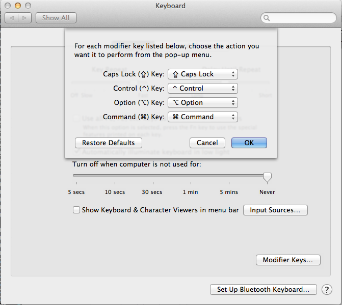

This is a dumping ground for various notes I’ve taken in regards to improving my workflow.
There’s no real structure to these and they are used purely to help me to remember things that I’d like to address at some point or content that I have not found a home for yet.
Would be nice if we could be automagically told when we need to run bundle or something critical to the system has changed. Could use hash tags for this.
Should not be able to push unless the tests are passing
- This could be a dick, would be an idea to allow for this to be relaxed or easily passed
Various notes on things to improve the way I handle my dotfiles.
- Should move irssi settings and config into a separate repository
- Dev Diary should be it’s own projects/repository
Improve the way I’m handling my credentials
- Need to be able to run a script which sets my config
- Add link to old braid setup GH #313889b
Improve the way I ignore files
-
Use
.git/info/excludeto hide local files
-
Use
Getting irssi to open up links in w3m as a new tab is pretty easy. Especially with the aid of tmux. We’ll need to add the following snippet to irssi: /set browse_command "tmux send-keys -t Interwepts T U %u C-m &"
- Make navigating to a window easier
Comment on how to automatically send commands to a IRC channel
- This is done for the bitlbee window to automatically login
Mappings
Open url in new tab
- This will be used im irssi by bjurl
- Automatically sign into twitter
- Automatically sign in to bitlbee
Things I need to work out and improve on relating to twirssi
- How do I read a conversation in twitter
Firstly I love VIM, so I want my key bindings whilst using zsh, this
appears to be as easy as adding set -o vi in your ~/.zshrc file.
I’m sure there are more things that you can do to get all of vi niceness but doing this alone gives up the basics, which we can build upon as we tweak our setup.
- look into pulling in my vi key bindings into zsh for general use
Make searching my history nicer
- Seems to be stalling at the moment
Customise prompt so rvm is not required
- Should still be able to tell which version of Ruby I am using
Renaming multiple files
Add the following to your .zshrc file:
autoload -U zmv alias mmv='noglob zmv -W'
- Setup copy and paste bindings to emulate vim
notify me of various changes to applications
- email and messages to me come to mind as good starts
Would like to improve the mappings for jumping between sessions and window
- This is becoming a bit of a pain
- New panels/windows should automatically cd into the project directory
- create a binding to allow me to open up links easily.
I’ve used Vim for a while but I’ve also been getting way to used to having a heap of bundles. I want to start out with a stripped down version of vim and document my journey from working with an out of the box setup to finding the learning some of the element I have neglected to learn up until now.
use Vundle for package management Separate bindings into different files dependant on their function
These are a few vi commands I use quie a lot, as in "I should alias"
:Git ci --amend # I'm forever amending commits
:Git rebase --continue # Normally used after I merge conflicts
:bd # To destroy a buffer
<C-W> n + # Increase my window height
<C-W> n - # Decrease my window height
:git scribe gen site # Generate my diary
:git scribe gen all # Generate my diary in all versions
Set current line to soft tabs
# Reset tabs to soft tabs :set et V =
Convert n number of lines into a list
# Turn a number of sentences into bullet points V: normal I *
Search and replace over multiple files
:argdo %s/2007/2008/g
- create vim scripts based on my workflows
- Make sure the shell is setup for zsh
- Tweak settings to make writing markdown a little nicer
- Able to open links and preview markdown via w3m
-
Add filetype
*.mdas*.markdown Find a plugin for making markup with markdown more productively
- Creating titles can be cumbersome
- Building lists can be painful
-
The same as of above applies to
*.ascand*asciidoc - mapping for toggling line numbers
- Jump to last last line I was on when I open a file
script to clean out vim history
- start with duplicates
- toggle line numbering
Format tables easily
- Using Align
Limit word wrap dependant on mime type
- I tend to prefer different limits dependant on what I am working on
- Display line limit
Save files when I changed tmux pain or window
- Would be cool if I could do this with iTerm also so that vim saves when I tab to another application.
Restart previous session
- Will help me to jump back into where I jumped off without having to manually remember what was open and where
- Set wordwrap dependant on the filetype
- Stop syntastic’s from displaying me errors when writing step definitions.
- fix issues with vim slowing down when using AutoComplPop
- Explore plugin, how do I use this better
-
motions
:help motion.txt - text objects
- autocmd
-
dvf char- delete up to char -
df char- delete up to and including the char -
:windo e- Refresh all window -
gggqG- Reformat all lines in the file
-
:hi Search ctermbg=red- Change the colour of search highlights -
set colorcolumn=140- set the column limit to 140 -
set textwidth=140- set the text width to 140 characters
Cucumber
-
I’m forever having to type
save_and_open_pagefor debugging
-
I’m forever having to type
ruby
-
source :rubygems -
gem 'foo'
-
- vim-pathogen http://github.com/tpope/vim-pathogen
- jasmine.vim http://github.com/claco/jasmine.vim
- webapi-vim http://github.com/mattn/webapi-vim
- vimerl http://github.com/jimenezrick/vimerl
- vim-textobj-user http://github.com/kana/vim-textobj-user
- vim-textobj-rubyblock http://github.com/nelstrom/vim-textobj-rubyblock
- vim-ruby-sinatra http://github.com/hallison/vim-ruby-sinatra
- vim-ruby-refactoring http://github.com/ecomba/vim-ruby-refactoring
- vim-ruby-block-conv http://github.com/bronson/vim-ruby-block-conv
- vim-rake http://github.com/tpope/vim-rake
- vim-ragtag http://github.com/tpope/vim-ragtag
- vim-puppet http://github.com/rodjek/vim-puppet
- vim-powerline http://github.com/Lokaltog/vim-powerline
- vim-indentobject http://github.com/austintaylor/vim-indentobject
- vim-coffee-script http://github.com/kchmck/vim-coffee-script
- vim-bundler http://github.com/tpope/vim-bundler
- vim-abolish http://github.com/tpope/vim-abolish
- syntastic http://github.com/scrooloose/syntastic
- vim-surround http://github.com/tpope/vim-surround
- vim-rails http://github.com/tpope/vim-rails
- vim-pastie http://github.com/tpope/vim-pastie
- nerdcommenter http://github.com/scrooloose/nerdcommenter
- vim-json http://github.com/leshill/vim-json
- jasmine.vim http://github.com/claco/jasmine.vim
- vim-fugitive http://github.com/tpope/vim-fugitive
- vim-endwise http://github.com/tpope/vim-endwise
- delimitMate http://github.com/Raimondi/delimitMate
- vim-cucumber http://github.com/tpope/vim-cucumber
- ctrlp.vim http://github.com/kien/ctrlp.vim
- AutoComplPop http://github.com/ayang/AutoComplPop
- asciidoc-vim http://github.com/spf13/asciidoc-vim
- ack.vim http://github.com/mileszs/ack.vim
- Align http://github.com/alanstevens/Align
- vim-vividchalk http://github.com/tpope/vim-vividchalk
- csv.vim http://github.com/chrisbra/csv.vim
- vim-repeat http://github.com/tpope/vim-repeat
- vimwiki http://github.com/vim-scripts/vimwiki
- vim-ruby http://github.com/vim-ruby/vim-ruby
- matchit http://github.com/tmhedberg/matchit
- AutoTag http://github.com/vim-scripts/AutoTag
- nerdtree http://github.com/scrooloose/nerdtree
- vim-unimpaired http://github.com/tpope/vim-unimpaired
- snipmate-snippets http://github.com/baphled/snipmate-snippets
- bufexplorer http://github.com/c9s/bufexplorer
- vim-snipmate http://github.com/garbas/vim-snipmate
- vim-addon-mw-utils http://github.com/MarcWeber/vim-addon-mw-utils
- tlib_vim http://github.com/tomtom/tlib_vim
Having the Control key where it is as default can be quite a strain on the fingers and I very rarely use the CAPLOCK key. So it’s a good idea to remap these keys so that I don’t stress may fingers unnecessarily.
Firstly I need to select Keyboard from System Preferences.

This is pretty easy to do on a mac. I needed to go to System settings and click on Modifier keys
I needed to change my modifier keys as follows.

Once I save the change, my CAPLOCK and Control keys are remapped.
We should ideally be learning new things, that we don’t currently know, to improve the way we solve and look at problems.
One of the best ways to do this is to actively learn something new every day.
For us, we’ll learn a new Vim trick and learn more about the linux tools that we have available to us and which can help improve the way we do our work day to day.
This can be quite hard to achieve, I’ve attempted this in the past, we’ll make
this interesting. We’ll create a simple script that will bring up a random man
page when ever you type manit.
We could also get this automatically by calling the script via a tmuxinator config file.
There are a hell of a lot of cool utilities that come out of the box with any Linux based machine, we should look into these and see how we can make use of these for our day to day work.
Some utils we should look at: sed ack grep xargs
Solve an on going personal problem * Ideally this should be small changes, so we see the effect and benefit
I need to improve the understanding of Bash and make more use of the Linux utility commands (ack, sed, xargs) Improve my productivity with Vim.
One of the most interesting things I have picked up whilst getting back to a console centric workflow is that a lot depends on where my fingers sit on the keyboard. Over time I learnt to touch type in my own way and after a time I still find myself looking at the keyboard to find a random key or having to stretch my fingers more than a typical toucher typer would.
I see the value in typing in traditional way but I never got round to leanring properly as I’ve had "othering" to do.
[NOTE]: Need a way of actually relearning where my fingers should be.
I maywell try to attempt this gradually and intergrate it into my daily entries. It’s going to take some dicipline but I think it shouldn’t take much effort to remap my fingers to centre around the homekeys more naturally.
Here is where I’m going store the various titbit that I’ve learnt over the years. I am assuming by the vagueness of this notion it will start of as a grap bag of notes and gradually split off to different sections.
-
map -k .- list all of the man pages on the system -
man $(/bin/ls /bin | awk '{ cmd[i++] = $0 } END { srand( ); print cmd[int(rand()*length(cmd))]; }')'- display a random manpage
I have a number of work flows I’d like to tweak and improve on. Here I’ll take notes and track my thoughts and ideas.
This is a session that centers around gathering information quickly from various sources.
Whether it’s a lazy web tweet or a question on an irc channel or personal note on evernote. This session will handle all of this and make it easier to find and handling information.
- mutt
- irssi
- console twitter client (twirssi)
- newsbeuter
We need to be able to easily search various information sources for a given answer, we should be able to be specific or ask the question openly.
- My gems should be installed in the global gemset so that all my sessions
Various scripts I’d like to help improve my authoring workflow
- Get a list of files and append them to a give file as includes
Getting recipes just right can be interesting and in the past I literally had to play it by ear. On this time round I wanted to be a bit more smarter about it. I had a little search online and came up with this which helped quite a lot. It gave my inspiration to refine this into a workflow so that I could easily test recipes whilst not having to wait for an email to actually come through.
Note
Add link to ~/bin/procmail_recipe_test. Located at GH#e452d09
I wrapped the Procmail dryrun command as shown above to easily run the script.
Procmail logs are located at ~/logs/procmail-dryrun.log so I ran tail
-f ~/logs/procmail.log in a split pane so that I could see what was
coming in.
Note
Ideally this should be part of the script that I just built.
Doing this gave me that ability to see how a the sample email was being filter, if at all.
Now the last peice of the puzzle was to easily create test emails without having to do them by hand. This again was pretty simple as mutt was already setup to use vim as its editor.
Pressing e in mutt opened an email in vim which meant that in Normal
mode I was apply to give the following command to save the sample email:
:w ~/emailtest.txt
Now that the sample email was save I am free to run
~/bin/procmail_recipe_test and see how the email is processed.
Note
Add screenshot of the split panes to demostrate the workflow
I’d like to take this opportunity to take note of my current navigation workflow in VIM. I use both NerdTree and CtrlP to navigate files in a project. As there are times when I know exactly what a file is called and/or how to get to it there is CtrlP quick and easy to open a file without having to really think about it. Then there are the time when I just want to get a lay of the land or a file is not where I expect it to be, this typically happens when a files naming convention breaks some of my vim plugins.
I’m often cloning a range of projects and have a few recipes that I use to set these up. To help me improve this workflow and finally automate I will outline the process and get it automated.
I typically have a number of windows open that I use to get my work done. First and foremost I always have vim open and typically set to the first window. I then have a browser open to the given languages API, this is usually via a browser.
If the given language has a REPL then I’ll have this open in another window for me to easily play around with concepts whilst ironing out a solution.
I’ll start off with the most used, which would be rails and ruby projects. I’ll create base configs for theses workflows and then create a wrapper script that allows me to clone a project and then copy the config to the correct place and finally start the session by call tmuxinator.
So the first project workflow i’ll capture is ruby projects there are a couple of ingredients to this recipe which go as follows:
- vim
- pry running the applications environemnt
the version of ruby
project_name: PROJECT_NAME project_root: PROJECT_PATH rvm: RUBY_VERSION@PROJECT_NAME pre: cd PROJECT_PATH && bundle && gup tabs: - Workbench: layout: b147,208x73,0,0[208x62,0,0,208x10,0,63{104x10,0,63,103x10,105,63}] panes: - vim - #empty, will just run plain zsh - Server: rackup - "Ruby Docs": w3m http://http://www.ruby-doc.org/core-RUBY_VERSION/ - Spyhole: tail -f ~/workbench.log - "Project Summary": g wtf - Toybox: pry
Note
Add a basic breakdown of what the config file actually does.
So I’ll need a script that takes the following arguements:
- project name
- project path
- ruby version
The first thing to do is create a new directory, this will be where all my tmux workflow templates will be stored. I then copied the above code into a file called ruby-project.yml which will be used to create my ruby based sesssion.
I then hacked together a script called setup_project as a ruby script to basically do all the leg work for me.
The script basically takes a git repo and clones the repository. It then try to work out what version of ruby is needed and creates a new gemset. Once this is complete I manipulate the skeletion yaml file and copies it into my tmuxinator directory. Now I’m ready to call the session and get to working.
The complete script can be found here, it basically does what I outlined above and will be the basis of the other workflows that I decide to focus on.
The only I came across was the an issue with not being able to load pry with a projects config. I’ll look into this as a side issue and create a new issue to address the changes.
Next, I’ll do the same for rails projects.
- Get pry to load my ruby projects
- make sure pry is available regardless of the gemset and ruby version
Note
Move the next 2 paragraphs to the workflows section
This script will be very basic to start of with and I will build it up as I work through my various workflows.
Initially I only want it to make a few changes, as outlined earlier, then once it is working for the basic workflows I’ll gradually improve the script to handle all my workflow needs.
So today is a little bit of a detour but I wanted to get this down for getting my other machines to make use of my new settings.
Firstly I tried to do a simple update but because of the change from braid to
git submodule that wasn’t possible. So the alternative was to remove my old
settings and .git/config.
rm -rf .git dotvim oh-my-zsh .gitconfig .gitignore
That removed all the files that related to my custom setings and allowed me to start a fresh pretty quickly. As there is no way to clone my dotfiles directly. I had to take the follwoing steps.
git init git add remote origin git@github.com/baphled/dotfiles.git git pull origin master
Once this was complete I still had to get the submodules updated so that everything was nicely setup.
git submodule update --init
Now I’m sure that there is a better way of doing this but as my dotvim repository also has submodules I need to run the same command as above within that directory to make sure that everything was up to date.
cd ~/dotvim git submodule update --init
Once that was updated everything was ready to use.
A list of tools that are needed for the my ideal workbench
- zsh
- irssi
- perl
- mutt
- w3m
- rvm
- ruby
- bundle
- tmuxinator
- git
- git-scribe
- vim
- ack
- newsbeuter
Today I had to install my dotfiles on a new system. These are the steps I needed to take.
Firstly I had to remove .bashrc as I already have a copy in my dotfiles. I did this with the following command.
rm .bashrc
Once that was complete I had to run the following commands to pull down my dotfiles and get the updated locally.
git init git add remote origin git://github.com/baphled/dotfiles.git git pull && git submodule init && git submodule update && git submodule status git submodule foreach --recursive git submodule update --init
Note
I’m sure there is a cleaner way to do this but it seems to do the trick for now.
As Raspbian doesn’t have zsh install by default I had to install it my self.
sudo apt-get install zsh
As my dotfiles require rvm to display the gemset I am currently working in.
curl -L https://get.rvm.io | bash -s stable --ruby
Once the installation process completed rvm was install and I was free to set zsh as my default shell.
The final step is to update my shell to zsh instead of bash.
chsh -s /bin/zsh
This will prompt for a password and once authorised the change will become perminent.
Some things I’d like to help tweak my productivity
- vim mappings for zsh or the terminal in general
- Make copy and pasting via tmux nicer
twirssi
- People I follow should be in a different colour
- People that follow me should be in a different colour
- Setup vim to allow me to preview markdown and asciidoc content
- Setup a virtual box for pair-programming
- Create script to check with links within content is broken or not
Output hilight to a file
- Look into outputting this to a shared window?
Here’s a bunch of tips and tricks I’ve picked up over time to help me with my day to day work.
problem: Get spaces between surrouding characters ({,( and friends)
solution: Make sure you use the closing tag, this way there will not be a space between the special characters and the inner text.
problem: Display line width solution: Add the following to your vimrc:
set colorcolumn=140 set tw=140
This sets the linecount to 140 and displays a vertical line where the line limit is.